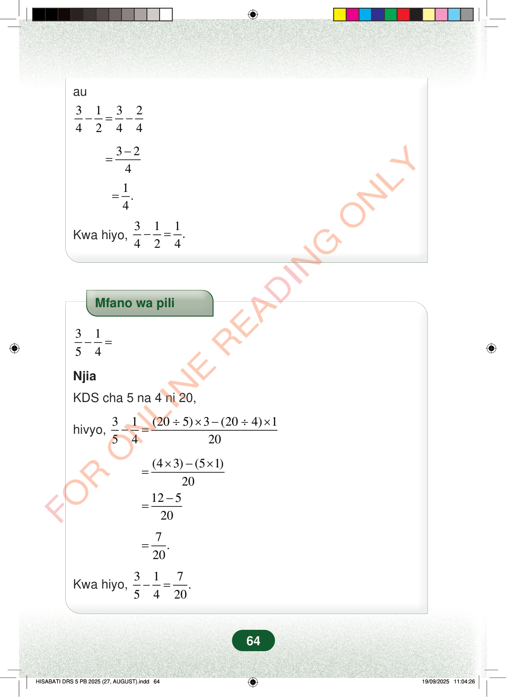

au31324244−=−324−=1.4=Kwa hiyo,311.424−=Mfano wa pili3154−=NjiaKDS cha 5 na 4 ni 20,hivyo,31(205)3(204)15420÷×−÷×−=(43)(51)20×−×=12520−=7.20=Kwa hiyo,317.5420−=64au
3 1 3 2 4 2 4 4 − = −
3 2 4 − =
1. 4 =
Kwa hiyo, 3 1 1. 4 2 4 − =
Mfano wa pili
3 1 5 4 − =
Njia
KDS cha 5 na 4 ni 20,
hivyo, 3 1 (20 5) 3 (20 4) 1 5 4 20 ÷ × − ÷ × − =
(4 3) (5 1) 20 × − × =
12 5 20 − =
7 . 20 =
Kwa hiyo,
3 1 7 . 5 4 20 − =
64
Hatua za kuonyesha kuwa 3/4 ukitoa 1/2 unapata 1/4. Inaandikwa 1/2 kuwa 2/4, kisha 3/4 - 2/4 = 1/4.au<math><mrow><mfrac><mn>3</mn><mn>4</mn></mfrac><mo>−</mo><mfrac><mn>1</mn><mn>2</mn></mfrac><mo>=</mo><mfrac><mn>3</mn><mn>4</mn></mfrac><mo>−</mo><mfrac><mn>2</mn><mn>4</mn></mfrac></mrow></math><math><mrow><mo>=</mo><mfrac><mrow><mn>3</mn><mo>−</mo><mn>2</mn></mrow><mn>4</mn></mfrac></mrow></math><math><mrow><mo>=</mo><mfrac><mn>1</mn><mn>4</mn></mfrac><mi>.</mi></mrow></math>Kwa hiyo,<math><mrow><mfrac><mn>3</mn><mn>4</mn></mfrac><mo>−</mo><mfrac><mn>1</mn><mn>2</mn></mfrac><mo>=</mo><mfrac><mn>1</mn><mn>4</mn></mfrac><mi>.</mi></mrow></math>Mfano wa pili wa kutoa sehemu: 3/5 - 1/4. KDS cha 5 na 4 ni 20, hivyo hatua za hesabu zinaonyesha jibu ni 7/20.Mfano wa pili<math><mrow><mfrac><mn>3</mn><mn>5</mn></mfrac><mo>−</mo><mfrac><mn>1</mn><mn>4</mn></mfrac><mo>=</mo></mrow></math>NjiaKDS cha 5 na 4 ni 20,hivyo,<math><mrow><mfrac><mn>3</mn><mn>5</mn></mfrac><mo>−</mo><mfrac><mn>1</mn><mn>4</mn></mfrac><mo>=</mo><mfrac><mrow><mrow><mo fence="true" form="prefix" stretchy="false">(</mo><mn>20</mn><mo>÷</mo><mn>5</mn><mo fence="true" form="postfix" stretchy="false">)</mo></mrow><mo>×</mo><mn>3</mn><mo>−</mo><mrow><mo fence="true" form="prefix" stretchy="false">(</mo><mn>20</mn><mo>÷</mo><mn>4</mn><mo fence="true" form="postfix" stretchy="false">)</mo></mrow><mo>×</mo><mn>1</mn></mrow><mn>20</mn></mfrac></mrow></math><math><mrow><mo>=</mo><mfrac><mrow><mrow><mo fence="true" form="prefix" stretchy="false">(</mo><mn>4</mn><mo>×</mo><mn>3</mn><mo fence="true" form="postfix" stretchy="false">)</mo></mrow><mo>−</mo><mrow><mo fence="true" form="prefix" stretchy="false">(</mo><mn>5</mn><mo>×</mo><mn>1</mn><mo fence="true" form="postfix" stretchy="false">)</mo></mrow></mrow><mn>20</mn></mfrac></mrow></math><math><mrow><mo>=</mo><mfrac><mrow><mn>12</mn><mo>−</mo><mn>5</mn></mrow><mn>20</mn></mfrac></mrow></math><math><mrow><mo>=</mo><mfrac><mn>7</mn><mn>20</mn></mfrac><mi>.</mi></mrow></math>Kwa hiyo,<math><mrow><mfrac><mn>3</mn><mn>5</mn></mfrac><mo>−</mo><mfrac><mn>1</mn><mn>4</mn></mfrac><mo>=</mo><mfrac><mn>7</mn><mn>20</mn></mfrac><mi>.</mi></mrow></math>